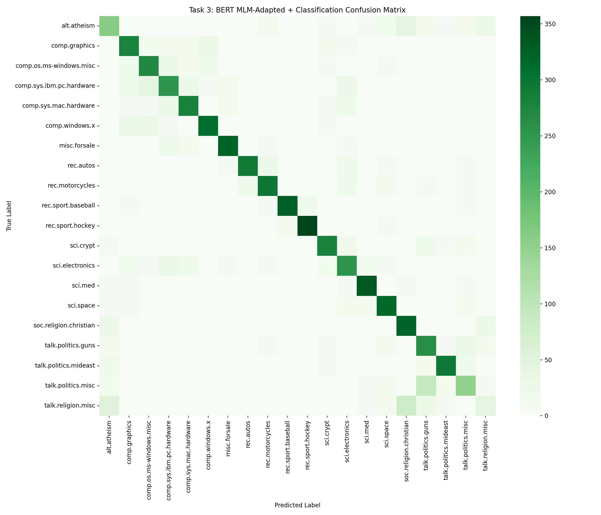
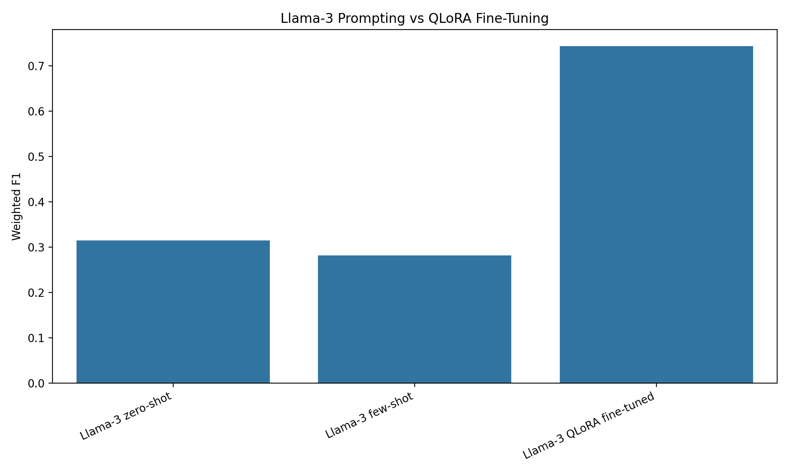

A compact tour through the experiments, what worked, what disappointed me, and what I learned about prompt-based classification.
Naa Lamiorkor Boye
NALAPRO Final Project
A compact tour through the experiments, what worked, what disappointed me, and what I learned about prompt-based classification.
Some topics are obvious, but many are close together: religion, politics, computer hardware, operating systems, and technical science discussions.
Classic vectorization, supervised BERT fine-tuning, BERT domain adaptation, Llama-3 prompting, and a bonus QLoRA fine-tuning run.
I also ran a full-context zero-shot Llama experiment with headers and quotes included. This was not a fair main comparison, but it helped explain Llama's behavior.
Train embeddings, average word vectors, classify with a simple NN.
Use sparse term-weight features with the same NN architecture.
Fine-tune BERT-base directly for 20-class classification.
Adapt BERT with masked language modeling, then fine-tune.
Try zero-shot, few-shot, full-context analysis, and QLoRA bonus.
Word2Vec improved with more epochs, but TF-IDF and n-grams captured discriminative topic words more directly.
TF-IDF `(1, 2)`-grams improved the simple NN result because short phrases carry useful topic signals.
Weighted F1: 0.7289
Full cleaned test set: 7,317 documents
Weighted F1: 0.7370
MLM samples: 9,912

Important lesson: prompt consistency mattered. Few-shot improved only after examples and requested output format both used label numbers.
This is a bonus result on a smaller subset, so I treat it as evidence that task adaptation helps, not as a direct full-test replacement for BERT.

The bonus result was promising, but the test set was smaller than the BERT evaluation.
The labels alone may not define the subtle boundaries between related newsgroups.
The most interesting mistakes happen between related topics such as politics, religion, and computer hardware.